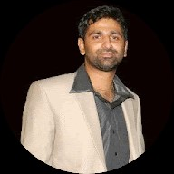

To pursue a career as a Virtualization architect and Infrastructure design architect in a challenging
Environment where I can give my best effort and complete the assigned task with best quality
Outputs to the organization through teamwork and to make company and myself grow simultaneously.
To pursue a career as a Virtualization architect and Infrastructure design architect in a challenging
Environment where I can give my best effort and complete the assigned task with best quality
Outputs to the organization through teamwork and to make company and myself grow simultaneously.
1N.Ajayender Raj
I want to beacome full stack developer I want to beacome full stack developer I want to beacome full stack developer
2N.Ajayender Raj
I want to beacome full stack developer
Work Experience
Dec 2014 – Jun-2016
Organization : Auropro Systems pvt Ltd
Designation : Server Administrator
Roles & Responsibilities:
• Installation, Configuration, Administration of ESXi 6.0, vCSA & Vcenter server.
• Creating and Managing Virtual Machines and Templates.
• Designing, Configuring and maintaining Active Directory Services on domain controller
• Experience on configuring data store to ESX server using iSCSI or LUN.
Excahnge 2007 Management:
• Administrating and Managing of Microsoft Exchange 2007 SP1.
• Upgraded Microsoft Exchange 2007 to Exchange server 2007 SP1.
• Mailbox creation, Mail queue monitoring and message tracking.
• Managing SCC Cluster Servers.
• Adding user to external mail group.
• Configured E-Mail Address Policies and Journaling as per client request.
• Creating of Mail contact & enabling mail forwarding.
• Creating New DL as per user request.
• Creating and managing exchange storage groups and storage movement.
• Implementing rules in Hub and Edge transport servers
• Creating SMTP connectors if required.
• SPAM mail controlling through EDEG server.
• Taking Backup of Exchange server 2007 using Symantec Backup Exec
• Mailboxes backup and restoration
• Exchange Servers Issues troubleshooting.
• Preparing the Documents and SOP’s.
• Having knowledge on Cluster services link SCC, CCR and LCR.
I want to beacome full stack developer
4N.Ajayender Raj
I want to beacome full stack developer I want to beacome full stack developer I want to beacome full stack developer
Feb 2011 – Dec 2014
Organization : Synolase Software India Pvt. Ltd., Hyderabad
Client : GMR International Airport Limited
Role : Server Administrator
Roles & Responsibilities:
• Effectively managing process & successfully guiding teams for ensuring achievement of Business Targets & service Delivery Metrics.
• Raising RFC for any implementation or modification on servers and environment.
• Managed messaging environment with Exchange 2007 & Blackberry server.
• Maintain and troubleshoot Blackberry Enterprise server 4.1 and Hand-held devices.
• Message tracking and troubleshooting to resolve mail delivery issues.
• Performing Offline Defrag. on databases
• User and group IDs creation in Microsoft Exchange 2007.
• Planning and implementing Exchange 2007 CCR, SCR clusters.
• Troubleshooting Exchange Database problems. Performing restores.
• Implementing Group Policies through Active Directory.
I want to beacome full stack developer I want to beacome full stack developer I want to beacome full stack developer
6N.Ajayender Raj
I want to beacome full stack developer I want to beacome full stack developer I want to beacome full stack developer